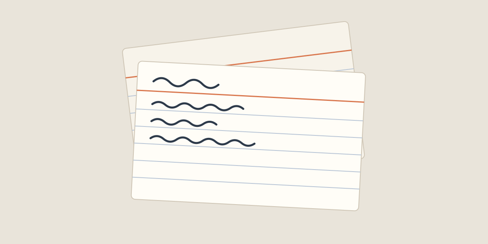

The case for a slower reading list
Most reading lists fail the same way: they grow faster than anyone can read them. A link saved on Monday is buried by Friday, and by the end of the month the list has become an archive of good intentions rather than a library.
The fix is rarely a better app. It is a better habit at the moment of saving. Before an article goes onto the list, ask one question: what will I do with this? If the honest answer is nothing in particular, let it go.

Keep the text, not the tab
A bookmark points at a page that can change, move behind a paywall or disappear. A copy of the text does not. Keeping the article itself, with its pictures and the link it came from, turns a pile of tabs into material you can search, quote and connect to everything else you know.
Tags help, but only a few. Three or four broad ones, such as research, craft and someday, beat forty precise ones that you will never filter by.
Read in one place
Clutter is the quiet enemy of attention. Navigation bars, banners and video that starts on its own all compete for the few minutes you meant to spend on the argument. A plain page with a comfortable line length lets the writing do its work.
When you finish, write one sentence about what you learned, right next to the article. That sentence is the reason the article was worth keeping, and it is the first thing you will search for later.
Make the list smaller on purpose
Once a month, read the list from the bottom. Anything that no longer earns a sentence goes. A short list you trust will be opened; a long one you dread will not.